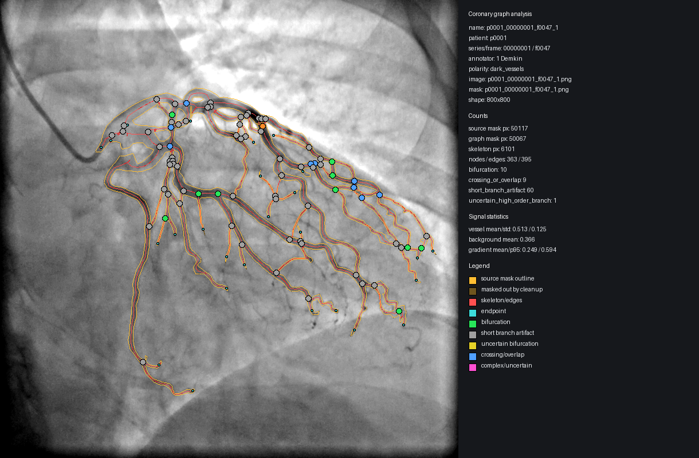

#1 p0001_00000001_f0047_1
Балл: 35.01
Причина: crossing/overlap=9; uncertain=61; скачок площади=7346px; много бифуркаций=10
Пациент/серия/кадр: p0001 / 00000001 / f0047
Разметчик: 1 Demkin
Бифуркации: 10; наложения: 9; сомнительные: 61
Скачок бифуркаций: 3; скачок площади: 7346px
